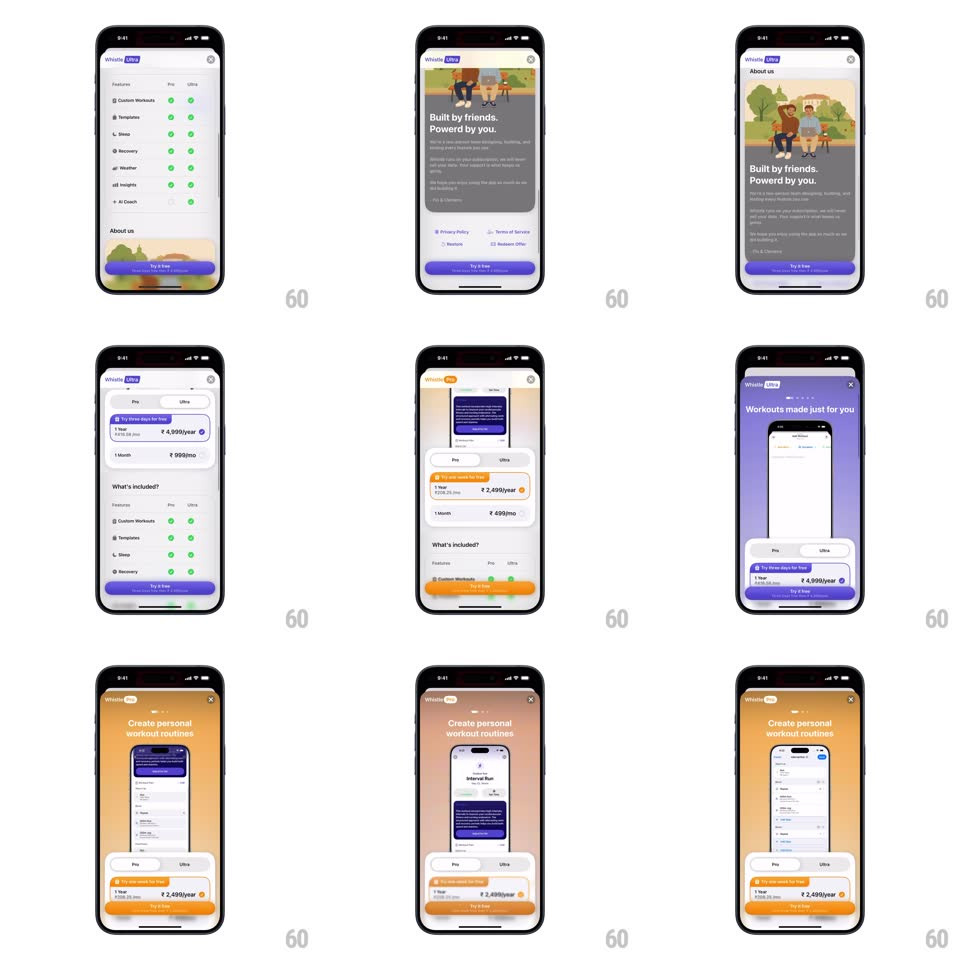

Media
Frame-by-frame

Rebuild this interaction 1:1: Whistle's plan toggle - switching the Pro/Ultra segmented control re-themes the whole paywall (purple for Ultra, amber-orange for Pro), slides the highlight across the price cards, and updates the feature table's check columns.

Rebuild this interaction 1:1: Whistle's plan toggle - switching the Pro/Ultra segmented control re-themes the whole paywall (purple for Ultra, amber-orange for Pro), slides the highlight across the price cards, and updates the feature table's check columns.
## Integration
Integration: stack-agnostic spec - springs given as stiffness/damping, timed motions as duration + curve; map every value to your framework and animation library of choice.
## Scene
Paywall screen: "Whistle ULTRA" header, feature headline with phone mockup, a "What's included?" comparison table (Custom Workouts, Templates, Sleep, Recovery, Weather, Insights, AI Coach - check columns for Pro and Ultra), price rows ("1 Year ₹ 4,999/year" Ultra, "₹ 2,499/year" and "₹ 999/mo" Pro), an "About us" footer card, and a "Try it Free" button. The Pro/Ultra pill sits at the top of the plan panel.
## Motion spec
Pattern: segmented re-theme, ~450ms.
- Toggle: the pill's selection indicator slides to the tapped side (spring ~420/24, 300ms).
- Re-theme: the background gradient, header badge, button, and check accents crossfade purple <-> amber (350ms, ease-in-out), washing top to bottom with a 40ms stagger.
- Prices: the price rows crossfade to the tier's options (250ms), the yearly row's "BEST VALUE" tag scaling in (spring ~400/18).
- Table: the active tier's check column highlights (tint column 150ms) while checks pop in (spring ~420/20, 30ms stagger down the rows).
## Calibration
- Every accent follows the tier - no purple left in Pro mode.
- Scrolling to the table keeps the pill pinned and functional.
## Reduced motion
Theme crossfades without stagger; checks appear without pop.
## Don't miss
- The re-theme is full-bleed - background gradient included, not just the button.
- The price swap and the theme swap happen together, never in sequence.